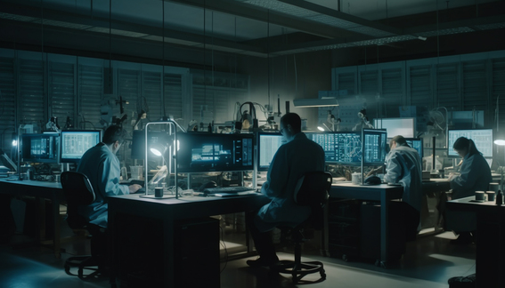
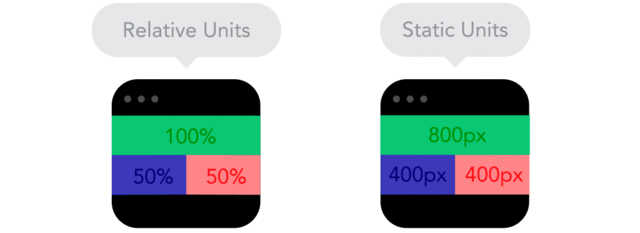

O Fascinante Mundo do Desenvolvimento Front-end
Front-end
O desenvolvimento front-end é uma área emocionante e desafiadora da programação, responsável por criar a interface com a qual os usuários interagem em um site ou aplicativo. Se você já se perguntou como as páginas da web são criadas e tornadas tão bonitas e interativas, você está prestes a descobrir!
O que é Front-end?
O front-end é a parte de um projeto web que os usuários veem e interagem diretamente. É o resultado do trabalho de desenvolvedores front-end, que utilizam tecnologias como HTML, CSS e JavaScript para criar layouts atraentes e funcionais. Com habilidades em design e conhecimentos em usabilidade, eles transformam ideias abstratas em experiências de usuário concretas.
Tecnologias Essenciais
Para ser um desenvolvedor front-end de sucesso, é importante dominar algumas tecnologias essenciais:
-

HTML (HyperText Markup Language): A base de qualquer página web, o HTML é usado para criar a estrutura e o conteúdo do site.
-

CSS (Cascading Style Sheets): Responsável pela aparência do site, o CSS controla o layout, as cores, fontes e estilos visuais.
-

JavaScript: A linguagem de programação que torna os sites interativos, permitindo animações, validações de formulários e muito mais.
Frameworks e Bibliotecas
Além das tecnologias básicas, os desenvolvedores front-end frequentemente utilizam frameworks e bibliotecas para agilizar o desenvolvimento e melhorar a experiência do usuário. Alguns exemplos populares incluem:
-
React: Uma biblioteca JavaScript mantida pelo Facebook, que permite a criação de interfaces de usuário reativas e componentizadas.
-
Angular: Um framework JavaScript desenvolvido pelo Google, que facilita a criação de aplicativos web complexos..
-
Bootstrap: Um framework CSS desenvolvido pelo Twitter, que oferece um conjunto de estilos e componentes pré-construídos.
Tendências Atuais
O desenvolvimento front-end está em constante evolução, e novas tendências surgem regularmente. Algumas das tendências atuais incluem:
-

Design Responsivo: Garantir que os sites se adaptem a diferentes tamanhos de tela, tornando-os acessíveis em dispositivos móveis e desktops.
-

Dark Mode: Uma opção de interface que oferece um esquema de cores escuro, proporcionando conforto visual aos usuários em ambientes com pouca luz.
-

Realidade Aumentada e Virtual: Integração de tecnologias como AR e VR para criar experiências imersivas na web.
Referências
- W3Schools - https://www.w3schools.com/
- MDN Web Docs - https://developer.mozilla.org/
- Smashing Magazine - https://www.smashingmagazine.com/
- CSS-Tricks - https://css-tricks.com/
- React Documentation - https://reactjs.org/docs/getting-started.html
- Angular Documentation - https://angular.io/docs
Conclusão
O desenvolvimento front-end é uma área empolgante, onde a criatividade e a tecnologia se encontram para criar experiências de usuário incríveis. Com as habilidades certas e um olho atento às tendências, os desenvolvedores front-end podem moldar o futuro da web.
Espero que esta publicação tenha lhe dado uma visão geral do fascinante mundo do desenvolvimento front-end. Se você estiver interessado em aprender mais, não deixe de conferir as referências fornecidas!